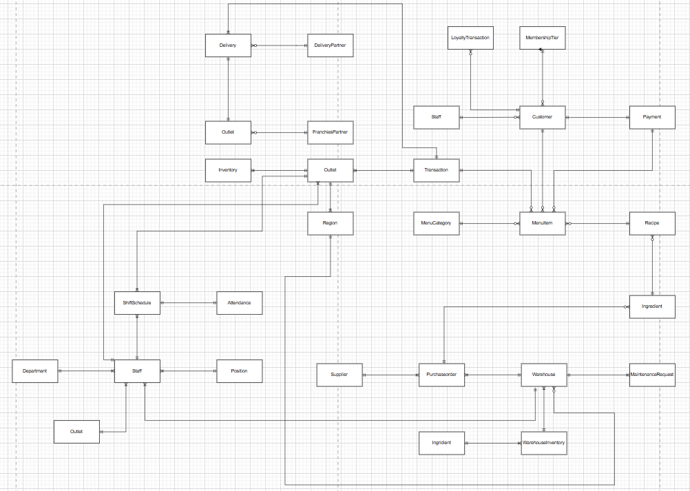
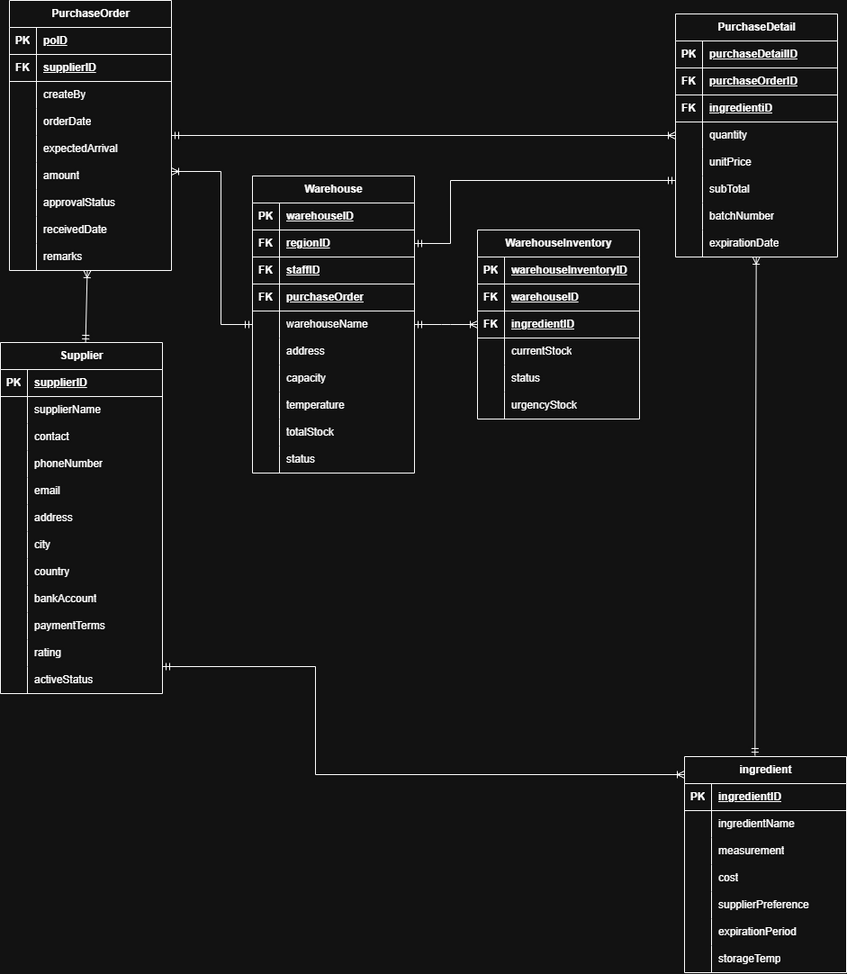
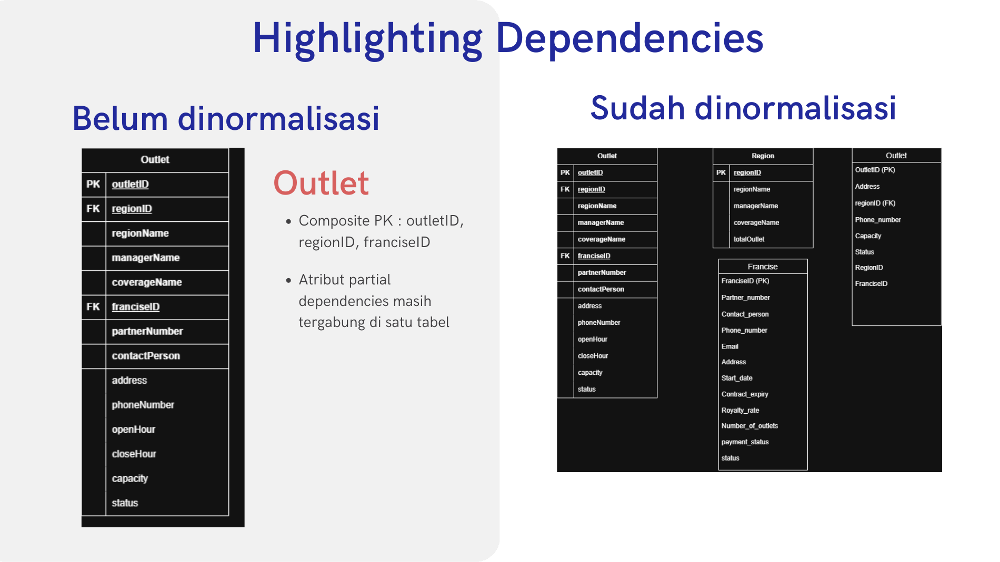
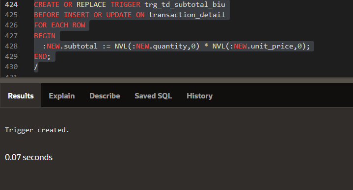

DIM / DATABASE DESIGN & MANAGEMENT
Solaria Database.
Connecting the data behind restaurant operations.
An academic team case study that translates a restaurant business scenario into conceptual and logical models, Oracle table definitions, and database rules.
- Course
- Data Information Management (DIM)
- Project context
- Kelompok 3 · Academic team project
- Physical design
- 32 table definitions in the report
- Database environment
- Oracle · Oracle APEX
PROJECT SCOPE
One model.
Connected operations.
The team's project, “Penerapan Proses Bisnis Solaria,” uses a restaurant scenario to study how outlets, menu items, recipes, suppliers, inventory, transactions, customers, and staff can share structured data.
The report follows the database lifecycle from an initial business study through conceptual, logical, and physical design. Its implementation material includes table definitions, constraints, sequences, triggers, and index examples, while the presentation connects the model to interface concepts.
Academic design and implementation coursework. The interface images show proposed screens; operational benefits and a production deployment are not established by the submitted materials.
INTERFACE CONCEPT
Making inventory visible.
A mockup connects the data model to a proposed staff workflow.

Inventory status interface concept
Original mockup from presentation slide 43. It illustrates stock visibility, status labels, and proposed adjustment and export controls using sample data.
DATA MODELING
From relationships to records.
Original diagrams from the group report and presentation.

Conceptual relationship map
Original figure from the report. This early overview maps relationships across the restaurant scenario; the later physical design expands the model into 32 table definitions.

Supply chain and inventory model
Original diagram embedded in presentation slide 20, showing purchasing, suppliers, warehouse stock, and ingredient records. Open the image to inspect its keys and fields.

Dependency and normalization exercise
Slide 24 documents a dependency exercise around outlet, region, and franchise information. The original slide is preserved as a design exercise.
PHYSICAL DESIGN
32 table definitions.
The report groups operational records through primary keys, foreign keys, and constraints.
| Operational area | Purpose | Example tables |
|---|---|---|
| Organization | Regions, franchise partners, and restaurant outlets. | region, franchise_partner, outlet |
| Menu and purchasing | Menu items, recipes, ingredients, suppliers, and purchase orders. | menu_item, recipe_detail, purchase_order |
| Inventory | Ingredient stock at outlets and warehouses. | inventory, warehouse, warehouse_inventory |
| Sales and customers | Transaction lines, payments, membership, and loyalty records. | transaction_header, transaction_detail, customer |
| People | Staff, departments, positions, shifts, and attendance. | staff, shift_schedule, attendance |
| Promotions and support | Promotion coverage, delivery partners, and maintenance requests. | promotion_menu, delivery, maintenance_request |
SELECTED SQL
Rules expressed in code.
Open each example to inspect an excerpt from the group's physical design.
These excerpts are reproduced from the submitted report. They illustrate individual design decisions and depend on the surrounding schema. The database has not been executed again for this portfolio.
01Calculate a transaction line subtotalOracle PL/SQL · Row trigger
The trigger assigns quantity × unit price before each insert or update. NVL treats a missing input as zero in this calculation.
CREATE OR REPLACE TRIGGER trg_td_subtotal_biu
BEFORE INSERT OR UPDATE ON transaction_detail
FOR EACH ROW
BEGIN
:NEW.subtotal := NVL(:NEW.quantity,0) * NVL(:NEW.unit_price,0);
END;
/
Documented trigger creation
Original screenshot embedded in slide 33. The creation message documents this trigger being created in the submitted environment; the portfolio does not rerun it.
Source: group report, subtotal trigger; presentation, slide 33.
02Define inventory records and constraintsOracle SQL · Table definition
The definition links stock to an outlet and ingredient, prevents negative stock values, restricts status labels, and makes each outlet–ingredient pair unique. Status values are constrained here; automatic status calculation is not part of this excerpt.
CREATE TABLE inventory (
inventory_id NUMBER(12) PRIMARY KEY,
outlet_id NUMBER(10) NOT NULL,
ingredient_id NUMBER(10) NOT NULL,
current_stock NUMBER(12,4) DEFAULT 0 CHECK (current_stock >= 0),
last_restock_date DATE,
minimum_required NUMBER(12,4) DEFAULT 0 CHECK (minimum_required >= 0),
expiration_date DATE,
last_checked_by NUMBER(10),
status VARCHAR2(20) DEFAULT 'OK' CHECK (status IN ('OK','Low','Expired')),
CONSTRAINT fk_inv_outlet FOREIGN KEY(outlet_id) REFERENCES outlet(outlet_id),
CONSTRAINT fk_inv_ingredient FOREIGN KEY(ingredient_id) REFERENCES ingredient(ingredient_id),
CONSTRAINT fk_inv_staff FOREIGN KEY(last_checked_by) REFERENCES staff(staff_id),
UNIQUE(outlet_id, ingredient_id)
);Source: group report, inventory table definition. Referenced tables must exist before its foreign keys can be created.
03Plan indexes for transaction lookupsOracle SQL · Index examples
The report proposes indexes on outlet, customer, and transaction date. They identify intended lookup paths; no query-speed benchmark is supplied.
CREATE INDEX idx_trx_outlet ON transaction_header(outlet_id);
CREATE INDEX idx_trx_customer ON transaction_header(customer_id);
CREATE INDEX idx_trx_date ON transaction_header(trx_date);Source: group report, index recommendations.
Explore more of my design, data, and systems projects.
Back to all projects